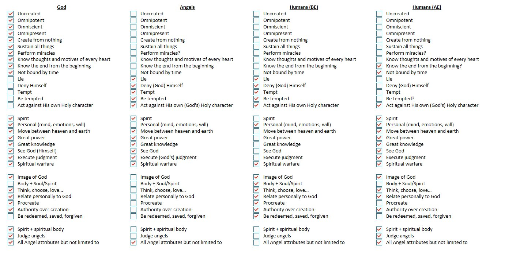

I know many of you are still sad the 49ers lost — take encouragement from Revelation instead. As believers, we receive a different judgment than unbelievers do. They're judged by their own deeds and motives; we won't be. We'll be judged by what we did for Christ — one thing will soon be past, only what's done for Christ will last. 1 Corinthians 3:12–15 tells us our lives will be tested by fire, and what's of Christ remains while what isn't burns up. So there's no need to dwell on the Seahawks. What the 49ers have done, though, that remains.
What I really want to share is the chart below. I woke up at 3am compelled to think this through and write it down. We've talked before about the differences between God and Satan — and the important point is that Satan has only a very small subset of God's attributes. The opposite of God is not Satan. Not even close. Satan is really the opposite of Michael the Archangel — a created being set against a created being, not a rival power set against the Creator.

Comments